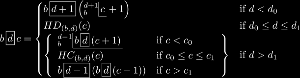
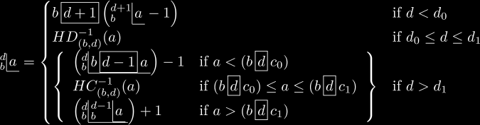

Home of Tetration
Home
|
Hyperops
|
Functions
|
Iteration
|
Tetration
|
Towers
Hyperop pages (
under construction
) :
Exponentiation
|
History
Extensions of Hyper-operators
For a general extension of hyper-operators:
 c_1 \end{array}\right\}} & \text{if } d > d_1 \end{cases} "/>
For hyper-logarithms:
 (\boxhyper{d}{b}{c_1}) \end{array}\right\}} & \text{if } d > d_1 \end{cases} "/>